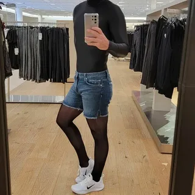

Сначала задача, затем вещь
Для нижнего слоя под брюки важны гладкая поверхность, длина и удобство пояса. Для сочетания с шортами добавляются цвет, рисунок и пропорции. В сценическом костюме на первое место выходят требования движения и конкретной постановки.
Повседневные колготки, спортивные тайтсы и медицинская компрессия решают разные задачи. Тонкая пара не заменяет утеплённый слой для любой погоды, а слово support в названии не подтверждает лечебный класс давления. При назначенной компрессии ориентируются на медицинские мерки и рекомендации специалиста, а не на DEN.
Что меняет мужской крой
В мужских моделях могут быть дополнительный объём спереди, другие пропорции верхней части, гульфик и более длинные ноги. Например, в названии Activskin A677 прямо указан fly — функциональное отверстие. Эти элементы относятся к конкретной модели, а не ко всем изделиям с надписью «для мужчин».
Обычная модель тоже может подойти, если хватает длины, объёма и растяжимости. Но покупка на размер меньше ради более плотного ощущения нередко ухудшает посадку: верх сползает, швы испытывают большее натяжение, мысок давит. Не стоит считать сильное сдавливание признаком правильного размера.
- Рост и длина ноги
- Полотно должно доходить до пояса без постоянного натяжения вниз. Если ластовица не занимает своё положение, проверьте длину и объём.
- Талия и бёдра
- Снимайте мерки без втягивания живота и сравнивайте с таблицей конкретного бренда. У разных марок одна буква размера означает разные диапазоны.
- Верхняя часть
- Проверьте комфорт сидя, при шаге и подъёме колена. Шов не должен создавать болезненную точку давления.
- Стопа и мысок
- Пальцы двигаются свободно; усиление не собирается в обуви. Высокий рост и большая стопа могут требовать другой размерной системы.
Четыре способа собрать комплект
Работайте с одним главным акцентом. Крупный рисунок проще сочетать с однотонным верхом, а гладкое полотно позволяет добавить фактуру в рубашке или свитере. Посмотрите на комплект в полный рост: важен переход от края шорт к колготкам и обуви.


Присланные фотографии служат примерами сочетаний. Бренд, состав и плотность вещей на них не установлены; эти сведения мы не приписываем изображению.
Первая пара: спокойный практический маршрут
- Определите задачу. Незаметный слой, тепло, внешний вид или сцена — это разные критерии.
- Запишите мерки. Рост, талию и бёдра; при наличии схемы производителя добавьте нужные измерения.
- Проверьте конструкцию. Длина, объём спереди, пояс, мысок, наличие стопы и удобство в выбранной обуви.
- Надевайте постепенно. Соберите изделие к мыску, распределите по голени и бедру, затем поднимайте верх. Не тяните всю длину за пояс.
- Примерьте в движении. Посидите, пройдитесь и поднимитесь по ступеньке. Постоянное сползание не нужно терпеть.
- Оцените после носки. Следы лёгкого прилегания и болезненное давление — не одно и то же. При боли, онемении или изменении цвета кожи снимите изделие; стойкие симптомы требуют медицинской оценки.
Носить ли бельё под обычными колготками — вопрос конструкции, гигиены, привычки и рекомендаций производителя. Наличие ластовицы не означает автоматически, что любую модель следует носить без белья. Для танцевального костюма учитывайте требования конкретной дисциплины.
Что проверить перед выходом
- Верх. Посмотрите, как рубашка, футболка или трикотаж лежат в движении и сочетаются по длине с пиджаком.
- Шорты. Проверьте посадку сидя и стоя. Пояс и верх колготок должны оставаться закрытыми одеждой.
- Обувь. Примеряйте комплект целиком: мысок, пятка и складки лучше видны в той паре обуви, которую будете носить.
- Свет. Оцените цвет и прозрачность у окна и при комнатном освещении.
Источники и дальнейшее чтение
- Adrian Grating: каталог и фотографии сочетаний ↗
- Activskin A677: пример мужской конструкции ↗
- NHS: назначение компрессионного трикотажа ↗
Проверено 15 ноября 2026. Свойства конкретной модели уточняйте в её карточке.